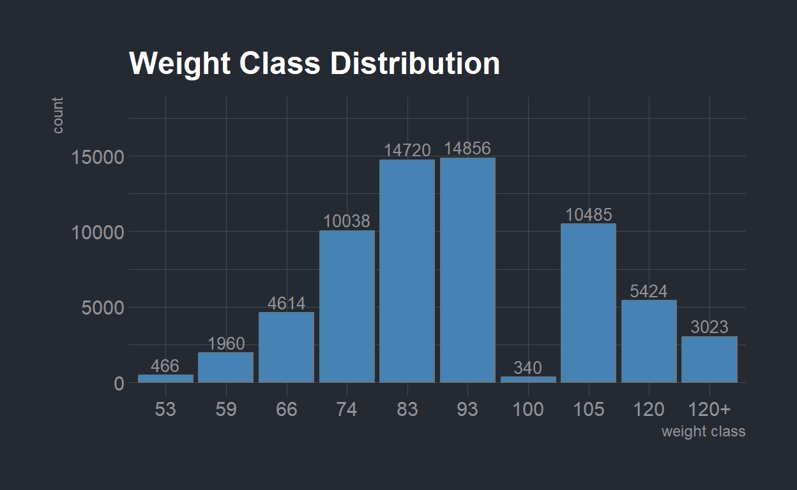
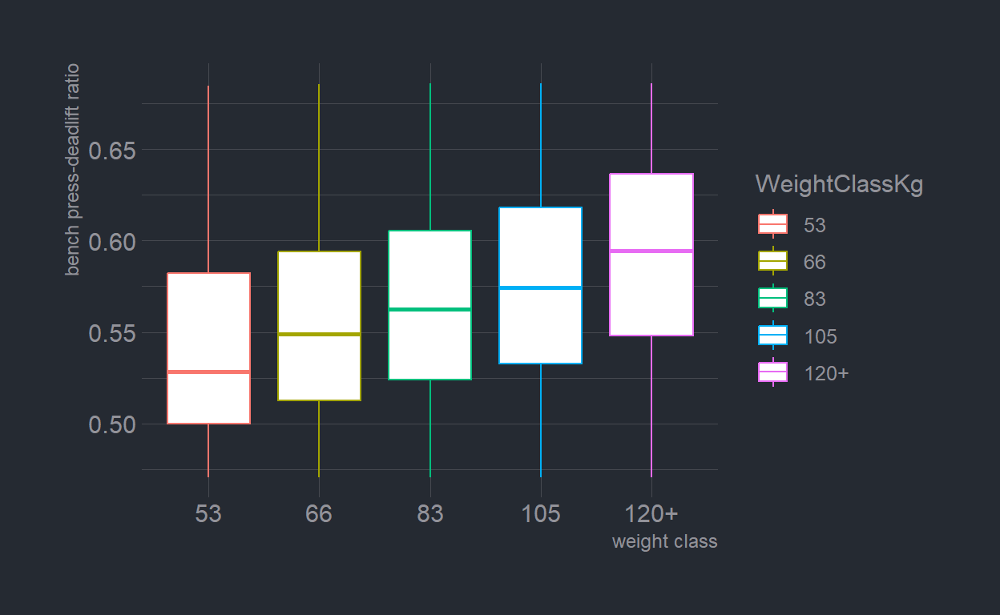
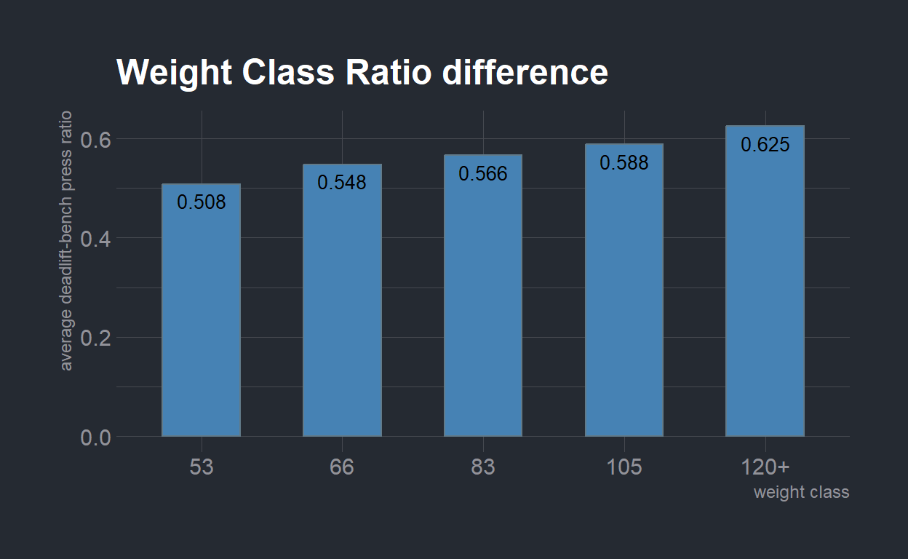
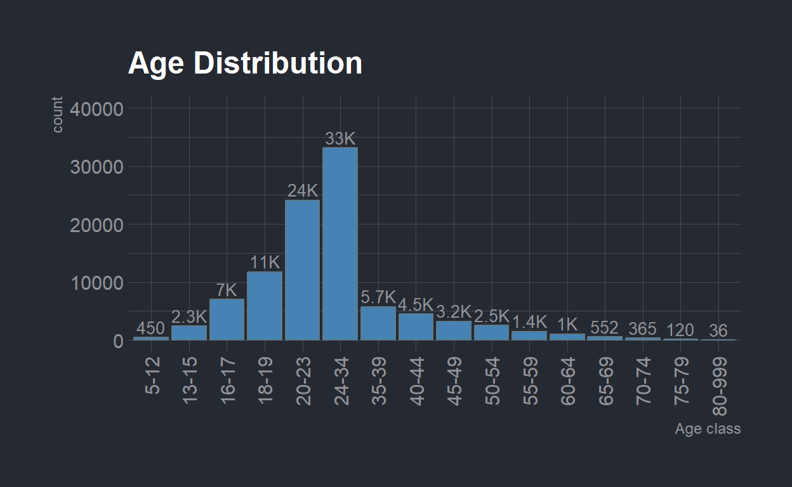
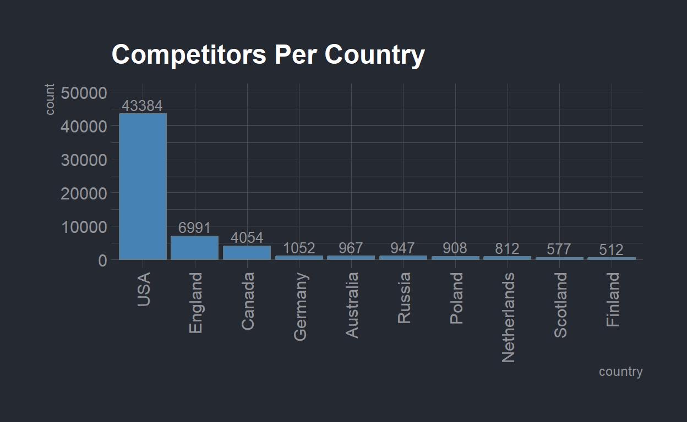
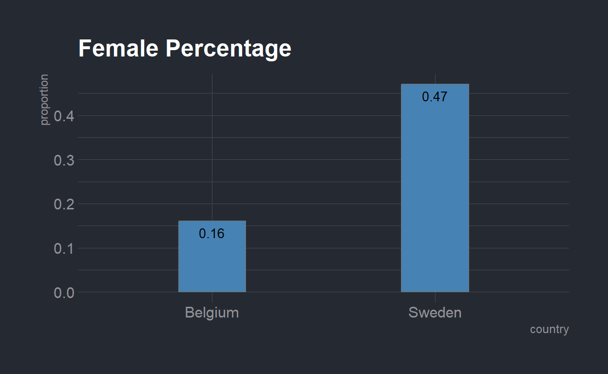
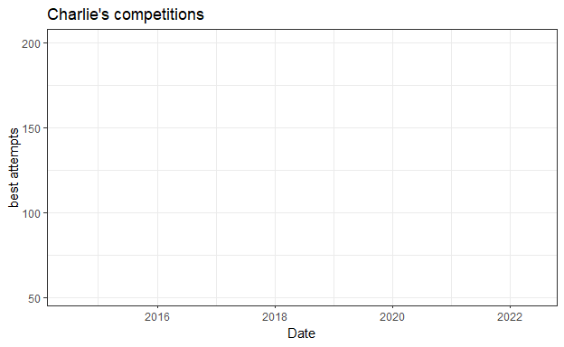

In this project, I will analyze powerlifting competitions from the famous federation called the IPF.
The first group is a series of statistical analyses that show some interesting things that may help several competitors.
The second group is analyses that show rare things in IPF and powerlifting in general.
Powerlifting is a strength sport in which the goal of each competitor in the basic competition is to lift the heaviest amount of weight among three lifts.
In every lift, the competitor receives three attempts, where his/her next attempt must be equal or heavier to that of the last one, “good lift” is considered a success, and “no lift” is considered a failure.
Every lift has three referees that raise a white flag or red flag.
For “good lift” the competitor must receive at least two white flags.
In each lift there can be some reasons for red flags, the obvious one is if the competitor did not complete the lift.
The lifter’s best valid attempt (heaviest “good lift”) on each lift counts toward the competition “total”.
After three attempts, the competitors continue to the next lift in the following order: squat, bench press, and deadlift. The winner in each category (the category is sectioned by gender, age, and weight) is the one with the heaviest “total”.
To start, let’s load the following libraries:
I took the database from https://openpowerlifting.gitlab.io/opl-csv/bulk-csv.html
The IPF has some competitions per period so apparently, there are some small changes in parts of the analysis.
Every row in the database refers to one competitor, in the original database, there are more than a million rows.
In addition, the original data includes non-basic competitions, so at first, I did a data cleaning in separate code and saved the relevant data frame as a different file.
The next code chunk is customized with eval=FALSE.
This means that this code chunk doesn’t run because it has been used before.
The clean data frame that I created includes only the following competitors:
competed in Raw and SBD events.
their gender and weight class were identified.
all the attempts were identified with at least one “good lift” in every exercise.
I cleaned the data more than required just in case (even with the clean data, there is enough information).
The last thing I did was to save only important information about every competitor (row).
The meet name, for example, is irrelevant to this project.
Next, I split the clean data frame into two different data frames.
The first one is the clean data that I created with the next code.
The second data frame is data that includes one competition per competitor.
This is because some competitors compete more than once and that may bias the results.
Show code
dat <- read.csv("open ipf.csv")
ipf_data <- dat %>%
filter(Equipment=="Raw",Event=="SBD",Sex!="Mx",WeightClassKg!="+",
!is.na(Squat1Kg & Bench1Kg & Deadlift1Kg &
Squat2Kg & Bench2Kg & Deadlift2Kg &
Squat3Kg & Bench3Kg & Deadlift3Kg),
Best3SquatKg>0,Best3BenchKg>0,Best3DeadliftKg>0) %>%
select(-MeetName,-MeetTown,-MeetState,-MeetCountry,-Federation,-Equipment,
-Glossbrenner,-Dots)
ipf_data %>% writexl::write_xlsx(path = "the final ipf cleaned data2.xlsx")
More about the data cleaning
First I chose only the lifters who competed in Raw and SBD events. Raw events have different characteristics than Equipped events because in Equipped events lifters can lift heavier weights, and that can affect the result of future analyses. The SBD events contain squat, bench press, and deadlift, while other events can include only one or two lifts, this difference can affect the analyses too. Then I removed the competitors that were classified as “Mx” gender and “+-” weight class because we need defined terms for these two. The best lift is defined as the heaviest good lift of the three attempts. In some parts of the analysis, we need lifters who have succeeded in at least one attempt of every lift. So the following step was to remove the lifters who had nonpositive numbers on the best good lifts. I could stop here with the observations cleaning but I had a lot of data so I decided to do one more thing so I can get high-quality data, so I removed the lifters who had missing value in at least one attempt. The last thing that I did was delete unnecessary columns that don’t contribute to our data analysis.
Statistical Analyses
Bench Press - Squat Ratio Difference Between Male and Female
The first analysis checks a familiar phenomenon:
when males, in general, have stronger bodies than females,
The difference is not very significant in terms of the lower body, in comparison to the upper body, where there is a major dissimilarity.
The squat is an exercise that ably demonstrates lower body strength and the bench press is an exercise that effectively demonstrates upper body strength.
So, in the following analysis, I checked the ratio between the bench press of the males versus females and I compared it to the ratio of the males’ and females’ squats.
I executed the next mathematical transition to make my hypothesis and conclusions more understandable:
(SQ - squat)
(BP - bench press)
\[ \hspace{2mm}H_O: \dfrac{maleBP}{femaleBP}<=\dfrac{maleSQ}{femaleSQ}\\ \hspace{1mm}H1: \dfrac{maleBP}{femaleBP}\hspace{0.5mm}>\hspace{1mm}\dfrac{maleSQ}{femaleSQ}\\ \hspace{1mm}H_O: \dfrac{maleBP}{maleSQ}\hspace{1mm}<=\hspace{1mm}\dfrac{femaleBP}{femaleSQ}\\ H1:\hspace{1mm}\dfrac{maleBP}{maleSQ}\hspace{2mm}>\hspace{2mm}\dfrac{femaleBP}{femaleSQ}\\ \]
(I multiplied by \(\dfrac{femaleBP}{maleSQ}\) (positive digit)).
The squat and the bench press that I used are the best attempts of the competitor.
Due to the data cleaning, all the competitors on the new data have at least one good attempt.
In addition, the data frame that I used for this analysis is called, “dat”, which includes one competition per competitor.
Show code
repeated_dat <- read_excel("the final ipf cleaned data2.xlsx",guess_max = 20000)
dat <- repeated_dat %>%
distinct(Name, .keep_all = TRUE)
dat <- dat %>%
mutate(squat_bench_ratio=Best3BenchKg/Best3SquatKg)
M_sq_bp_ratio <- dat %>%
filter(Sex=="M") %>%
pull(squat_bench_ratio)
F_sq_bp_ratio <- dat %>%
filter(Sex=="F") %>%
pull(squat_bench_ratio)
sq_bp_test <- t.test(M_sq_bp_ratio,F_sq_bp_ratio,alternative ="greater")
pander(sq_bp_test,split.cells = 2)| Test statistic | df | P value | Alternative hypothesis | mean of x | mean of y |
|---|---|---|---|---|---|
| 143.9 | 71497 | 0 * | greater | 0.68 | 0.5717 |
Show code
p1 <- ggplot(dat) +
geom_density(aes(x=squat_bench_ratio, colour=Sex, fill=Sex), alpha=0.6) +
xlim(0,1.5) +
xlab("squat - bench press ratio")
p1 <- p1 +
scale_color_ft() +
labs(title = "Gender SQ-BP Ratio Distribution") +
theme_ft_rc()
p1The essence of the result is as follows:
The average weight of the males’ bench press is about 68% of the weight of their squat.
The average weight of the Females’ bench press is about 57% of the weight of their squat.
The result is statistically highly significant and this justifies the alternative hypothesis.
Bench Press - Deadlift Ratio
As we saw, the ratio between two different lifts in one group can be unequal to the ratio of the same lifts in another type of group.
Elchonon Brody, one of the best powerlifting coaches in Israel (and thanks to him I held the Israeli record of bench press in my category) proposed the following hypothesis:
There is a difference between the ratio of two lifts in different body-weight classes.
The deadlift is a pull exercise, and the bench press is a push exercise.
Therefore, there is an importance in the ratio between them for reasons of balance and body health.
Consequently, I decided to check the ratio between the deadlift and bench press using the following hypothesis of Elchonon:
(DL - dead lift)
(HW - Heavy body weight class)
(LW - Low body weight class)
\[ H_O: \dfrac{HWBP}{HWDL}<=\dfrac{LWBP}{LWDL}\\ H1: \dfrac{HWBP}{HWDL}\hspace{2.2mm}>\hspace{2.2mm}\dfrac{LWBP}{LWDL}\\ \]
Difference between various competitors:
Elchonon believes that the ratio between bench press and deadlift is higher with heavy-weight competitors in comparison to light-weight competitors.
So, in the following analysis, I studied the hypothesis with multiple comparisons between varying weight classes.
Because we know that the ratio between different lifts can be influenced by gender, I performed the analysis only on males.
In addition, I analyzed which classes has the most competitors, and then I picked the five that had the most significant difference between their weight.
Show code
dat <- dat %>%
mutate(deadlift_bench_ratio=Best3BenchKg/Best3DeadliftKg)
WeightClass_n <- dat %>%
filter(Sex=="M") %>%
count(WeightClassKg) %>%
arrange(desc(n)) %>%
slice(1:10)
WeightClass_n <- WeightClass_n[-7,] %>%
arrange(as.numeric(WeightClassKg)) %>%
bind_rows(WeightClass_n[7,])
WeightClass_n$WeightClassKg <- reorder.factor(WeightClass_n$WeightClassKg, new.order=WeightClass_n$WeightClassKg)
p2 <- ggplot(WeightClass_n, aes(x=WeightClassKg,y=n)) +
geom_bar(stat="identity",fill="steelblue")+
geom_text(aes(label=n), vjust=-0.3, size=3.5) +
xlab("weight class") + ylab("count") + ylim(c(0,18000))
p2 <- p2 +
scale_color_ft() +
labs(title = "Weight Class Distribution") +
theme_ft_rc()
categories <- c("53","66","83","105","120+")
multiple_comparisons_df <- dat %>%
filter(WeightClassKg %in% categories,Sex=="M")
multiple_comparisons_df$WeightClassKg <-
reorder.factor(multiple_comparisons_df$WeightClassKg, new.order=categories)
p3a <- ggplot(data=multiple_comparisons_df, aes(x=deadlift_bench_ratio, group=WeightClassKg, fill=WeightClassKg)) +
geom_density(adjust=1.5, alpha=0.65) +
xlim(0.2,1.1) + xlab("deadlift-bench press ratio") +
theme_ipsum()
p3a <- p3a +
scale_color_ft() +
labs(title = "Ratio Distribution") +
theme_ft_rc()
p3b <- ggplot(multiple_comparisons_df, aes(x=WeightClassKg, y=deadlift_bench_ratio,color=WeightClassKg)) +
geom_boxplot() + scale_y_continuous(limits = quantile(multiple_comparisons_df$deadlift_bench_ratio, c(0.1, 0.9))) + coord_cartesian(ylim = quantile(multiple_comparisons_df$deadlift_bench_ratio, c(0.1, 0.9))) + xlab("weight class") + ylab("bench press-deadlift ratio")
p3b <- p3b +
theme_ft_rc()
WeightClass_ratio <- multiple_comparisons_df %>%
group_by(WeightClassKg) %>%
summarise(ratio=mean(deadlift_bench_ratio))
WeightClass_ratio$ratio <- round(WeightClass_ratio$ratio,3)
p4 <- ggplot(WeightClass_ratio, aes(x=WeightClassKg,y=ratio)) +
geom_bar(stat="identity",fill="steelblue",width = 0.55)+
geom_text(aes(label=ratio), vjust=1.6,color="black", size=3.5) +
xlab("weight class") + ylab("average deadlift-bench press ratio")
p4 <- p4 +
scale_color_ft() +
labs(title = "Weight Class Ratio difference") +
theme_ft_rc()
dl_bp_ratio <- multiple_comparisons_df$deadlift_bench_ratio
wc_kg <- multiple_comparisons_df$WeightClassKg
dl_bp_test <- pairwise.t.test(dl_bp_ratio,wc_kg,alternative="greater",p.adjust.method="bonferroni")
dl_bp_test_df <- dl_bp_test$p.value
dl_bp_test_df[which(dl_bp_test_df<2e-16)] <- "<2e-16"The next bar chart shows the weight class distribution:
Show code
p2
In the following graphs, you can see the bench press-deadlift ratio distribution in the various weight classes, and the ratio of each weight class in box plots:
Show code
p3aShow code
p3b
In the following bar chart, you can see the average bench press-deadlift ratio of each weight class (from the chosen weight classes):
Show code
p4
The following table shows the pairwise t-test:
Show code
kbl(dl_bp_test_df) %>%
kable_styling(bootstrap_options = c("striped", "hover")) %>%
add_header_above(c(" ", "pairwise t-test with bonferroni method" = 4))| 53 | 66 | 83 | 105 | |
|---|---|---|---|---|
| 66 | <2e-16 | NA | NA | NA |
| 83 | <2e-16 | <2e-16 | NA | NA |
| 105 | <2e-16 | <2e-16 | <2e-16 | NA |
| 120+ | <2e-16 | <2e-16 | <2e-16 | <2e-16 |
As you can see, on average, the bench press weight of the lightest weight class is 50.8% of the weight of their deadlift.
You can see that when the weight class increases, the percentage goes up too.
In addition, every pairwise comparison is statistically highly significant.
difference between the same competitors:
(\(BD_{ratio}\) - bench press - deadlift ratio)
The next analysis is the main analysis of this project because it can give real discoveries. The previous analysis was not enough to give suggestions, because each group has individual characteristics that can affect the result:
\[
BD_{ratio}=weight_{class}+\epsilon
\]
Every weight class has its random errors (\(\epsilon\)) that may correlate with the ratio of bench press - deadlift and weight class too, Height for example is one of them.
These correlations can affect the consistency of our estimator.
The solution that I came up with is to use the “repeated data” (the data frame which includes competitors who compete more than once).
With this data frame, I can include competitors that compete in more than one body-weight class and by that solve the consistency problem.
These competitors have several fixed characteristics that we can lose when we execute a paired ‘t test’.
In this method, we remove a part of the random errors that affected our estimation.
So the following analysis tests the difference between the bench press-deadlift ratio in two different body weight classes of the same competitor, and that can be done thanks to the “repeated data”.
Show code
repeated_dat_bp_dl <- repeated_dat %>%
filter(!is.na(WeightClassKg),!is.na(BodyweightKg)) %>%
mutate(deadlift_bench_ratio=Best3BenchKg/Best3DeadliftKg)
splited_repeated <- repeated_dat_bp_dl %>%
distinct(Name,WeightClassKg,.keep_all = T) %>%
group_by(Name) %>%
filter(n()>1) %>%
summarize(Name,WeightClassKg,BodyweightKg,deadlift_bench_ratio,n=n()) %>%
ungroup() %>%
arrange(n,Name,WeightClassKg) %>%
group_split(n,.keep = T)
make_pairs <- function(data){
n <- data %>%
pull(n) %>%
unique()
pair_1 <- data[seq(1,nrow(data),by=n),]
pair_2 <- data[seq(n,nrow(data),by=n),]
return(bind_rows(pair_1,pair_2) %>% arrange(Name,BodyweightKg))
}
pairs_list <- lapply(splited_repeated,make_pairs)
pairs_dat <- bind_rows(pairs_list)
weights_vec <- pairs_dat %>%
pull(deadlift_bench_ratio)
heavier_weight <- weights_vec[seq(2,length(weights_vec),by=2)]
lower_weight <- weights_vec[seq(1,length(weights_vec),by=2)]
pair_test <- t.test(x = heavier_weight,y=lower_weight,alternative = "greater",paired = T)
pander(pair_test,split.cells = 2)| Test statistic | df | P value | Alternative hypothesis | mean difference |
|---|---|---|---|---|
| 27.07 | 20059 | 8.152e-159 * | greater | 0.01179 |
Now, it is easier for me to suggest some things.
For example, for an individual who has shoulder pain that is caused by stronger push muscles than pull muscles, I will suggest considering this analysis.
In addition, I would recommend reducing some load on this competitor’s push exercise and to lose body weight.
Despite my recommendation to lose weight, I must note weight loss reduces the ratio between bench press and deadlift only by 1.1%.
code explanation
First I removed the competitors that have missing value in bodyweight class or body weight. The next step was to keep the competitors that compete in more than one bodyweight class, and split the competitors by the number of the different bodyweight classes that they competed in. Then, I used the make_pairs function that I created which takes only two competitions for every competitor. Eventually, I used the pairs that I collected, and test the deadlift-bench press ratio of every pair with paired t-test.
Good Lift and No Lift Analysis
The last statistic analysis consists of two analyses.
The first one detects if there is the same quantity of “good lift” in each exercise.
The second analysis checks if there is a correlation between one lift fail/success and another lift fail/success.
In these two analyses, I used the third attempt of every lift.
In the second analysis, I analyzed the correlation between the squat and the bench press because there are the most diverse exercises (therefore, the correlation between them is less obvious than the other combination).
Quantity of “good lift” in different lifts:
Show code
#prop test squat3 bench3 and deadlift3 no lift
dat <- dat %>%
mutate(G_squat3 = case_when(Squat3Kg>0 ~ 1,
TRUE ~ 0),
G_bench3 = case_when(Bench3Kg>0 ~ 1,
TRUE ~ 0),
G_deadlift3 = case_when(Deadlift3Kg>0 ~ 1,
TRUE ~ 0))
G_sq <- dat %>%
filter(G_squat3==1) %>% nrow()
G_bp <- dat %>%
filter(G_bench3==1) %>% nrow()
G_dl <- dat %>%
filter(G_deadlift3==1) %>% nrow()
pop <- nrow(dat)
percent <- round(c(G_sq/pop,G_bp/pop,G_dl/pop),2)
percent <- percent*100
percent <- paste(as.character(percent),"%",sep = "")
percent <- paste(c("squat:","bench press:","dead lift:"),percent)
writeLines(c("good lift percentage:",percent))good lift percentage:
squat: 67%
bench press: 46%
dead lift: 65%Show code
good_lifts_pt <- pairwise.prop.test(x = c(G_sq,G_bp,G_dl), n = rep(pop,3), p.adjust.method = "bonferroni")
good_lifts_pt_df <- good_lifts_pt$p.value
good_lifts_pt_df[which(good_lifts_pt_df<2e-16)] <- "<2e-16"
colnames(good_lifts_pt_df) <- c("squat good lifts proportion","bench press good lifts proportion")
row.names(good_lifts_pt_df) <- c("bench press good lifts proportion","dead lift good lifts proportion")
kbl(good_lifts_pt_df) %>%
kable_styling(bootstrap_options = c("striped", "hover")) %>%
add_header_above(c(" ", "Pairwise comparison of proportions" = 2))| squat good lifts proportion | bench press good lifts proportion | |
|---|---|---|
| bench press good lifts proportion | <2e-16 | NA |
| dead lift good lifts proportion | <2e-16 | <2e-16 |
The first analysis found that on average, the percentage of the “good lift” on the third attempt is:
squat - 67%, bench press - 46%, deadlift - 65%.
With the Bonferroni method, I found that the difference between every lift is statistically highly significant.
The meaning of this result is that even the 2% difference between squat and deadlift is a very rare result if the amount of “good lift” is equal between squat and deadlift.
One interesting thing I found that powerlifters can use from this analysis, is the low proportion of “good lift” in the bench press.
On average, there is more “no lift” than “good lift” in the third attempt, so powerlifters should take into account this result and plan the bench press attempts accordingly.
Correlation between exercises’ success/fails:
Show code
#chisq test no lift squat and bench
good_lifts_ct <- chisq.test(dat$G_squat3,dat$G_bench3,correct = F)
pander(good_lifts_ct,split.cells = 2)| Test statistic | df | P value |
|---|---|---|
| 832.2 | 1 | 5.368e-183 * |
Show code
obs11 <- dat %>%
filter(G_bench3==1,G_squat3==1) %>% nrow()/pop
obs10 <- dat %>%
filter(G_bench3==1,G_squat3==0) %>% nrow()/pop
obs01 <- dat %>%
filter(G_bench3==0,G_squat3==1) %>% nrow()/pop
obs00 <- dat %>%
filter(G_bench3==0,G_squat3==0) %>% nrow()/pop
exp11 <- (as.numeric(G_bp)*as.numeric(G_sq))/(pop^2)
exp10 <- (G_bp*(dat %>% filter(G_squat3==0) %>% nrow))/(pop^2)
exp01 <-
(as.numeric(dat %>% filter(G_bench3==0) %>% nrow)*G_sq)/(pop^2)
exp00 <-
((dat %>% filter(G_bench3==0) %>% nrow)*(dat %>% filter(G_squat3==0) %>% nrow))/(pop^2)
df <- data.frame(
group=c("11","10","01","00","11","10","01","00"),
value=c(obs11,obs10,obs01,obs00,exp11,exp10,exp01,exp00),
type=c(rep("observed",4),rep("expected",4))
)
df$value <- round(df$value,3)
newggslopegraph(df, type, value, group,
Title = "expected versus observed",
SubTitle = "",
Caption = "",
YTextSize = 3,
DataTextSize = 3,
DataLabelPadding = 0.1,
DataLabelLineSize = 0.7,
DataLabelFillColor = "lightblue",
LineThickness = 1.25) + theme_minimal() +
theme(legend.position = "none")
I will explain the second analysis via the slope graph:
On the sides you can see the group splitting, the left number refers to bench press and the right number refers to squat.
For example, ‘01’ (the color green) means “no lift” for bench press, and “good lift” for squat.
The left column shows the expected values of each option (the result that was expected if there is no correlation between the lifts).
The right column shows the real values that I received (the observed values).
As you can see the ‘00’ and ‘11’ groups received a bigger part on the observed column, while the ‘01’ and ‘10’ got a smaller part on the observed column.
So, the squat and the bench press get the same value 52% of the time (“good lift”+“no lift”).
While on the expected option (the option that there is no correlation between them) they get the same value only 47% of the time.
In addition to the intuitive explanation, you can see the ‘chisq test’ before the slope graph, which detects if there is a statistically significant difference between the expected and observed values.
On the ‘chisq test’, I got a statistically significant result.
Non-statistical Analyses
Wilks and Records Analysis
In the following analysis, you will notice some interesting facts about powerlifting competitions.
Show code
k_func <- function(n){
n_k <- numeric(length(n))
for (i in 1:length(n)){
if (n[i]<1000)
n_k[i] <- n[i]
else if (n[i]<10000){
n_2 <- n[i]/1000
if (as.numeric(substr(as.character(n_2),1,3))==floor(n_2)){
n_2 <- as.character(floor(n_2))
n_k[i] <- paste(n_2,"K",sep = "")
}
else{
n_2 <- substr(as.character(n_2),1,3)
n_k[i] <- paste(n_2,"K",sep = "")
}
}
else{
n_2 <- as.character(floor(n[i]/1000))
n_k[i] <- paste(n_2,"K",sep = "")
}
}
return(n_k)
}
#age distribution
Age_data_frame <- repeated_dat %>%
filter(!is.na(AgeClass)) %>%
distinct(Name,AgeClass,.keep_all = T) %>%
count(AgeClass)
age_char <- Age_data_frame$AgeClass %>%
strsplit("-") %>%
unlist() %>%
as.numeric() %>%
sort() %>%
as.character()
age_factor <- rep(NA,length(age_char)/2)
for (i in 1:length(age_factor)){
j <- ceiling(i*2)
age_factor[i] <- paste(c(age_char[j-1]),age_char[j],sep = "-")
}
Age_data_frame$AgeClass <- reorder.factor(Age_data_frame$AgeClass, new.order=age_factor)
p5 <- ggplot(Age_data_frame, aes(x=AgeClass,y=n)) +
geom_bar(stat="identity",fill="steelblue")+
geom_text(aes(label=k_func(n)), vjust=-0.3, size=3.5) +
scale_x_discrete(guide = guide_axis(angle = 90)) +
xlab("Age class") + ylab("count") + ylim(c(0,40000))
p5 <- p5 +
scale_color_ft() +
labs(title = "Age Distribution") +
theme_ft_rc()
## records analysis
records_dat <- repeated_dat %>%
filter(!is.na(AgeClass),!is.na(WeightClassKg),
!is.na(TotalKg))
#oldest_record
oldest_record <- records_dat %>%
add_count(Sex,AgeClass,WeightClassKg) %>%
group_by(Sex,AgeClass,WeightClassKg) %>%
slice_max(TotalKg) %>%
select(Sex,AgeClass,WeightClassKg,Name,Date,TotalKg) %>%
arrange(Date)
# oldest record with more than 1000 competitors
oldest_record1000 <- records_dat %>%
add_count(Sex,AgeClass,WeightClassKg) %>%
filter(n>1000) %>%
group_by(Sex,AgeClass,WeightClassKg) %>%
slice_max(TotalKg) %>%
select(Sex,AgeClass,WeightClassKg,Name,Date,TotalKg) %>%
arrange(Date)
# the oldest competitor
oldest_competitor <- records_dat %>% arrange(desc(Age)) %>%
select(Name,Age,BodyweightKg,Best3SquatKg,
Best3BenchKg,Best3DeadliftKg,TotalKg) %>%
slice(1)
# the heaviest total in 80 or more age group
strongest_old <- records_dat %>% filter(Age>=80) %>% slice_max(TotalKg) %>%
select(Name,Age,BodyweightKg,Best3SquatKg,
Best3BenchKg,Best3DeadliftKg,TotalKg) %>%
slice(1)First of all, I will present the distribution of the age class from the youngest to the oldest (the 80-999 age group means no age limit):
Show code
p5
Age Distribution data frame
The “repeated_dat” and “dat” could not reflect the age distribution. The “repeated_dat” includes some competitions of the same individual competitor and that can bias the result, and “dat” takes the first competition of every competitor, so for competitors that competed in some age classes it takes the youngest one and that can bias the result too.
So I used the distinct function on “repeated_dat” by name and age class, and by that the new data frame includes some competitions of the competitors that competed more than once, but takes only one competition of every weight class.
The first analysis shows the oldest record in IPF (the heaviest total that no one has passed throughout the years in a specific category):
| Sex | AgeClass | WeightClassKg | Name | Date | TotalKg |
|---|---|---|---|---|---|
| M | 24-34 | 110+ | Don Reinhoudt | 1973-11-09 | 1034.18 |
The second analysis shows the oldest record in IPF, with more than 1,000 competitors who compete in the specific category:
| Sex | AgeClass | WeightClassKg | Name | Date | TotalKg |
|---|---|---|---|---|---|
| M | 16-17 | 66 | Yosuke Kiuchi | 2014-03-23 | 620 |
The third analysis shows the oldest competitor that ever competed on the IPF:
Show code
gt(oldest_competitor)| Name | Age | BodyweightKg | Best3SquatKg | Best3BenchKg | Best3DeadliftKg | TotalKg |
|---|---|---|---|---|---|---|
| Svend Stensgaard | 92.5 | 78.2 | 65 | 60 | 125 | 250 |
The fourth analysis shows the heaviest total that a competitor 80 years old or more lifted in a competition:
Show code
gt(strongest_old)| Name | Age | BodyweightKg | Best3SquatKg | Best3BenchKg | Best3DeadliftKg | TotalKg |
|---|---|---|---|---|---|---|
| Emil Alin | 81.5 | 112.7 | 155 | 110 | 200 | 465 |
Differences Between Countries
To understand this analysis, you must learn an additional term in power lifters’ vocabulary, ‘Wilks’.
The ‘Wilks’ is a formula that is used to compare lifters in different body weight classes in order to find the strongest lifter while taking into account the lifter’s body weight.
Show code
countries_competitors <- dat %>%
filter(!is.na(Country)) %>%
count(Country) %>%
arrange(desc(n)) %>%
head(10)
p6 <- ggplot(data=countries_competitors, aes(x=reorder(Country,desc(n)),y=n)) + geom_bar(stat="identity", fill="steelblue")+
geom_text(aes(label=n), vjust=-0.3, size=3.5) +
scale_x_discrete(guide = guide_axis(angle = 90)) +
ylim(c(0,50000)) + xlab("country") + ylab("count")
p6 <- p6 +
scale_color_ft() +
labs(title = "Competitors Per Country") +
theme_ft_rc()
strongest_five <- dat %>%
arrange(desc(Wilks)) %>%
slice(1:5) %>%
select(Country,Wilks)
#most and least percentages of female competitors
dat_fem <- dat %>%
add_count(Country) %>%
filter(n>200)
dat_fem <- dat_fem %>%
group_by(Country) %>%
summarise(female_precentage=mean(Sex=="F"))
min_max <- dat_fem %>%
filter(female_precentage%in%
c(min(dat_fem$female_precentage),
max(dat_fem$female_precentage)))
min_max$female_precentage <- round(min_max$female_precentage,2)
p7 <- ggplot(data=min_max, aes(x=Country, y=female_precentage)) + geom_bar(stat="identity",fill="steelblue",width = 0.3) +
geom_text(aes(label=female_precentage), vjust=1.6,
color="black", size=3.5) + xlab("country") + ylab("proportion")
p7 <- p7 +
scale_color_ft() +
labs(title = "Female Percentage") +
theme_ft_rc()First of all, I presented the countries that had the most amount of lifters:
Show code
p6
The first analysis takes the lifters that get the highest Wilks score, and checks from which countries they originated from:
Show code
gt(strongest_five)| Country | Wilks |
|---|---|
| USA | 600.98 |
| USA | 581.16 |
| Russia | 578.52 |
| Poland | 569.83 |
| USA | 567.83 |
As you can see, the strongest competitors in the IPF are from the USA, Russia, and Poland.
If the strength of the lifter is independent of his/her country, Russia and Poland are surprising results because there are some countries with more competitors than this two.
The second analysis shows the countries with the most and the least percentages of female competitors (when taking only into consideration countries with more than 200 competitors).
Show code
p7
This result is very interesting because the difference is quite big.
So I decided to check some factors that may cause this outcome.
checking the female percentage in Sweden and Belgium over the years made me even more surprised.
Female percentage in Sweden and Belgium
In this link you can see that Belgium’s female percentage was higher than Sweden’s female percentage from 1960 to 2021.
However, Sweden has a higher score on ‘Gender Equality Index’ in every year that exists in the following link:
Gender Equality Index
Those who are interested in this difference can request from me more analyses on the females’ percentage in IPF.
These two factors I mentioned do not suffice. Another analysis can detect countries with a lower female percentage and a lower score on the ‘Gender Equality Index’ in comparison to Belgium. Nevertheless, Belgium is the country with the lowest female percentage in IPF.
Therefore, additional factors influence the observed result.
Competed the Most Amount of Times
In this final analysis, I found the competitor that competed the most amount of times in the IPF (remember, this data includes only SBD and RAW events).
Show code
| Name | number of competitions |
|---|---|
| Charlie Chester | 46 |
Show code
Charlie_progress <- repeated_dat %>%
filter(Name=="Charlie Chester") %>%
arrange(Date) %>%
select(Date,Best3SquatKg,Best3BenchKg,Best3DeadliftKg,TotalKg)
Charlie_progress <- mutate(Charlie_progress, Date= as.Date(Date))
Charlie_plot <- ggplot(Charlie_progress, aes(x=Date)) +
geom_line(aes(y = Best3SquatKg), color = "blue") +
geom_line(aes(y = Best3BenchKg), color="black") +
geom_line(aes(y = Best3DeadliftKg), color="red") +
transition_reveal(Date) +
labs(title = "Charlie's competitions") +
ylab("best attempts")
animate(
plot = Charlie_plot,
render = gifski_renderer())
In the graph, you can see Charlie’s bench press (in black), squat (in blue), and deadlift (in red).
What you may find interesting is how the trends in the lifts are very similar.
The similar trends can match the ‘chisq test’ in this project, which ultimately found a correlation between squat and bench press success and failure.